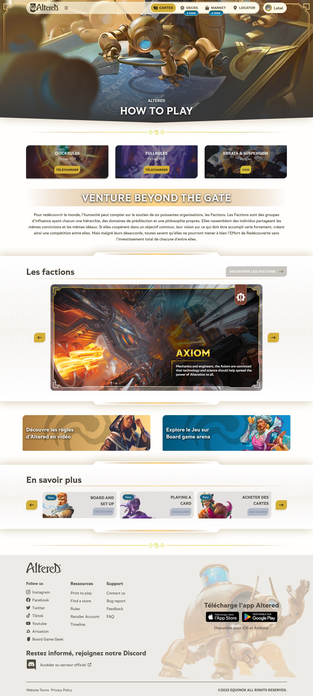
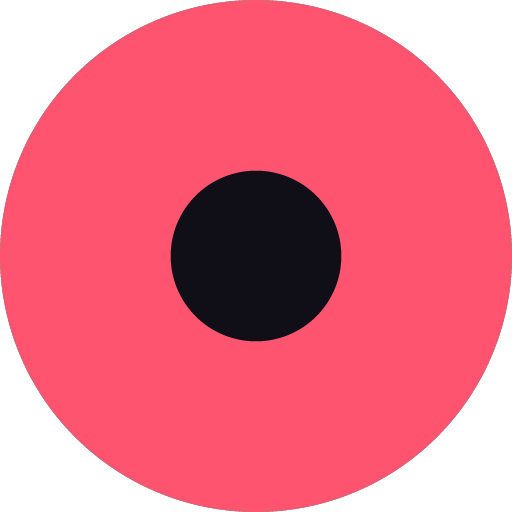

Design system
Tous les composants du portfolio et de l’agent, classés de l’atome à la page. Chaque exemple est le vrai composant, lu dans les fichiers du site.
Fondations
css/tokens.cssLes valeurs de base. Tout le reste en dépend : une couleur, un rayon ou une ombre de l’interface vient d’ici. Cliquez une couleur pour copier son token.
Couleurs
Surfaces
Texte
Remplis
Traits et états
Couleur
Typographie
Geist partout. Labels en casse de phrase, graisse 500, jamais en mono majuscules. Geist Mono est réservé aux données techniques.
Displayclamp(48–112px) · 600 · −0,045em
Product
Designer.
Titre d’étude de casclamp(34–60px) · 600 · −0,04em
Concevoir un écosystème
Titre de sectionclamp(28–40px) · 600 · −0,03em
Le problème de départ
Titre de carteclamp(24–32px) · 600 · −0,025em
Signer tout ce qu’on livre
Sous-titre22px · 600 · −0,02em
Trois temps pour un lancement
Chapô20px ·
--mutedDu constat de marché au produit testable.
Texte de lecture18px / 1,7 ·
--fg-2Je prototype et je livre mes propres produits : moins de transferts, et une intention qui ne se dilue plus.
Corps16px / 1,5
Le texte courant de l’interface, des cartes et des réponses de l’agent.
Label14px · 500 ·
--t-eyebrowRôle · Résumé · Contact
Légende13,5px ·
--t-captionLa page How to play, version desktop.
Petit13px ·
--t-small10:12 · FR · 0,019 ¢
MonoGeist Mono · données
--ink: #111113
Rayons
--radius28px · panneaux pleine largeur
--r-lg24px · blocs
--r-md18px · cartes, figures
--r-sm14px · tuiles
--r-xs10px · logos, vignettes
--r-pillboutons, chips
Ombres
--sh-ringContour 1px
--sh-floatBulle, carte posée
--sh-overlayFeuille, dialogue
AtomesIndivisibles
Les plus petites pièces : un bouton, une pilule, un badge, un trait. Elles ne se décomposent plus et se réutilisent partout.
Boutons
Bouton
.btn.primary · .btn — cartes projet, étude suivanteBouton dans un panneauPrend les variables
--c-* du produit (ici Go MoonBound)Action principale
.cs-visit — en-tête d’étude de casBouton secondaire
.copy-btn — bloc ContactPilules et chips
ReposSurvolEnfoncé
Pilule discrète
.tool — barre de l’agent ; même dessin que les liens de navigation et le lien retourLien retour
.cs-back — haut des études de casChip de suggestion
.chip — sous les réponses de l’agentBadges, picto, langue
User researchPrototypingProduct visionVibe coding
Badges
.badges · .badge — hero et À propos de l’accueil, sources de la méthode Sklip/
Picto « i », sélecteur de langue
.ipic — dans les réponses de l’agent · .lang-switch — pied de pageSéparateurs
Fin d’une partie.
Début de la suivante.
Trait
.cs-hr · 1 px --line — entre deux parties d’une étude de casProjets
Label sur un trait
.label — ouvre chaque section de l’accueilTrait pleine largeur
footer::before — au-dessus du pied de page, dépasse le conteneur jusqu’aux bords de l’écranMoléculesQuelques atomes assemblés
Des groupes simples qui forment une unité : une bulle et son texte, une carte, une figure et sa légende.
Cartes
Certification
.cert — À propos de l’accueilUne seule source de vérité
L’agent ne connaît qu’un profil rédigé par Olivier. Ce qui n’y figure pas, il dit qu’il ne le sait pas.
Panneau
.panel — Informations de l’agent (à fond blanc, sur le gris de l’agent)Carte d’étude
.case — proposée par l’agent sous une réponse669voyageurs
72 %actifs ce mois-ci
Tuile chiffrée
.tiles — voir Contenus pour la grille complèteConversation
Olivier est Senior Product Designer. Aujourd’hui il conçoit et construit :
- Go MoonBound
- Sklip
Il cherche quoi en ce moment ?
Pour en savoir plus sur cet agent, cliquez sur .
Bulles
.msg.bot · .msg.me — page Agent : listes, gras, italique, pictoSaisie en cours
.typing — dans une bulle, le temps que la réponse arriveActions et avis
.acts · .act · .fb — sous une réponse de l’agentVotre question→Contrôles et limites→Claude Haiku + profil→Réponse→Suggestions ↺
Parcours
.flow — Informations de l’agent : comment une question circuleContenus
7,8 Mcartes scannées
6,2 M€sur Kickstarter
15+pays
Tuiles chiffrées
.tiles · colonnes --n, fond --tile-bg, .stack en colonne sur mobile — Altered, Go MoonBound, Sklip- Cadrer le besoin avec les joueurs
- Concevoir le parcours
- Tester avant de livrer
Liste
.cs-list — études de cas, puces grisesUne intention qui ne se dilue plus entre le design et le code.
Citation
.cs-quote
Figure et légende
.cs-fig — un clic ouvre l’image en grand (.lightbox) sur les études de casHistorique des mises à jour
- v1.1avril 2026
Classement et partage.
- v1.0mars 2026
Lancement : scène 3D Terre / Lune.
Journal repliable
.cs-log — Go MoonBoundEncadré
.cs-aside — SklipÉtude de cas
Méta
.cs-meta — en-tête des études de casEn bref
- Un écosystème pensé en trois temps.
- Un paiement conforme dans 15 pays.
Résumé
.cs-tldr · .cs-keys — Altered, Go MoonBoundTemps 1 · Cadrer
- Mon rôle
- Cadrer, concevoir, tester.
Étape, tableau de rôles
.cs-step · .cs-rolesOrganismesSections complètes
Des blocs autonomes qui portent une fonction : la barre du haut, une carte projet, le dock de l’agent.
En-tête d’étude de cas
← Tous les projets


SklipConcevoir facilement ses propres Scratch Tools
Du constat de marché au produit testable.
En-tête d’étude de cas
.cs-back · .cs-head · .cs-meta · .cs-visit · .cs-hero — haut de chaque étude de cas ; le visuel prend toute la largeur du conteneurCartes projet
Carte projet · miniature Agent
.card + habillage produit (.agent, .moon, .sklip…) — accueil. Sur le site, le visage ASCII d’Olivier s’ajoute à droite.Étude suivante
.cs-next · fond --next-bg — fin des études de casAppareils


MacBook et iPhone
.macbook · .iphone · .ios-bar — cartes Go MoonBound et Décadi, vitrine d’AlteredDock de l’agent
Une question sur mon parcours ?
Dock de l’agent
agent-dock.js · .agd-field — collé en bas de toutes les pages publiques ; un clic l’agrandit en feuille qui contient la page Agent. Le vrai est actif en bas de cette page.Contact et pied de page
Contact
Écrire
otousche@gmail.com
Réseau
LinkedIn ↗Basé à
Paris · remote
Contact
.contact · contact.js — bas de chaque page publique. Le script y ajoute le portrait ASCII d’Olivier, posé sur le trait du pied de page et coupé par le bord droit : il est en vrai en bas de cette page.Pied de page
footer · .lang-switch — toutes les pages publiques ; un trait pleine largeur au-dessus, le choix de langue à droiteSpécifiquesHors système
Des modules qui n’existent que sur une page, souvent aux couleurs d’un produit. Ils s’appuient sur les tokens, mais ne sont pas des composants du système : leur CSS reste dans leur page. Un clic ouvre le module en place.
Go MoonBoundRapport de mission Les chiffres en direct, dans le ciel étoilé du produit : tuiles vitrées, courbe, indicateurs.
gm-report
SklipFiches personas Un carrousel de fiches aux couleurs et à la typo de Sklip (Outfit).sp-*
SklipSchéma de méthode Les étapes BMAD par agent, avec chevrons, l’humain dans la boucle et les chiffres.bmad · bm-*
AlteredVitrine MacBook défilante Une page qui défile dans un MacBook, la navigation restant collée en haut.showcase · sm-*
AlteredPhases et schéma Les trois temps du projet en cartes, et le schéma des flux de paiement.cs-phases · cs-diagram
AccueilActivité GitHub Le calendrier des contributions, ses cinq gris lus dans les tokens.gh-*
AgentBarre et champ de l’agent La jauge de messages en anneau, le champ et son faisceau coloré, le visage ASCII.bar · quota · compose
GabaritsLes grilles des pages
Les organismes mis en page. Chaque gabarit est dessiné à l’échelle d’un écran de 1440 px et d’un téléphone de 390 px, avec les vraies largeurs ; seules les hauteurs sont raccourcies.
Accueil
Ouvrir la page ↗1200 max · contenu 1136
- Hero
- 980 px max, une colonne
- Carte projet
5fr / 7fr(texte / visuel), marges internes 48 px ; une colonne sous 860 px- Cartes entre elles
- Gouttière 20 px
- À propos
1fr / 1fr, gouttière 48 px ; une colonne sous 480 px- Rythme
- Sections séparées de 96 px, label sur un trait
Étude de cas
Ouvrir la page ↗880 max · colonne de lecture centrée
- En-tête
- Titre et méta sur 860 px max, chapô 46 caractères
- Hero
- Pleine largeur du conteneur, ratio
16/8(4/3sous 760 px) - Colonne de lecture
.cs-body880 px max, centrée ; texte 18 px, titres espacés de 96 px- Dans la colonne
.tiles3 ou 4 colonnes (2 sous 760 px) ;.cs-split1fr / 1fr, gouttière 40 px- Étude suivante
1fr / 1fr, gouttière 32 px ; une colonne sous 760 px
Agent
Ouvrir la page ↗.col · 760 max, centrée
- Écran
- Plein écran, sans
.wrap: barre vitrée en haut, conversation au centre, champ collé en bas - Colonne
--col760 px max, marges 16 px ; la conversation et le champ partagent la même colonne- Bulles
- 600 px max (88 % sur mobile), agent à gauche, visiteur à droite
- Informations
- Cartes en
1fr / 1fr, gouttière 12 px ; une colonne sous 640 px - Visage ASCII
- Fixé au bord droit, 40 % hors écran ; estompé sous 1100 px
Catalogue
Cette page- Mise en page
- Sommaire
200pxcollant | contenu1fr, gouttière 56 px - Exemples
- Cadres en
1fr / 1fr, gouttière 12 px ; une colonne sous 760 px - Sous 900 px
- Le sommaire disparaît, ses liens passent dans la barre du haut
Règles
Un token avant une valeur
Une couleur, un rayon ou une ombre de l’interface vient de tokens.css. Une page ne redéfinit un token que si sa surface change (l’agent : --bg: var(--canvas)).
Une définition par composant
Ce qui sert à plusieurs surfaces vit dans components.css, ce qui sert aux pages publiques dans site.css. Le <style> d’une page ne garde que sa mise en page.
Labels en casse de phrase
Geist 500, jamais de mono majuscules, y compris dans les légendes et les schémas.
Les produits gardent leurs couleurs
Les maquettes (Sklip, Go MoonBound, Altered, Décadi, Stampit) sont des illustrations : leurs couleurs et polices restent en dehors des tokens.
Contact
Écrire
otousche@gmail.com
Réseau
LinkedIn ↗Basé à
Paris · remote